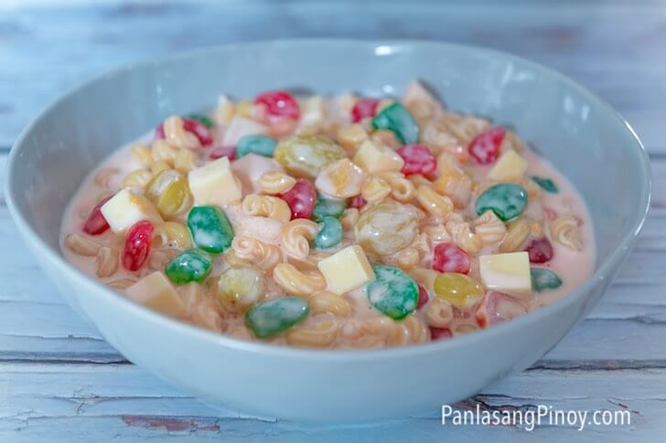

Macaroni Fruit Salad is a favorite Filipino dessert during the holidays and special occasions.
This is not your typical macaroni salad. It is more of a dessert rather than a side dish.
It is sweet, creamy, and heavenly.

This salad is more popular in the southern parts of the Philippines – in Visayas and parts of Mindanao, to be specific.
This sweet concoction can have several components, just like what you see in this Sweet Mac Salad Recipe.
Macaroni Fruit Salad is a popular dessert in the Philippines and for Filipinos all over the world.
It is creamy delicious and very easy to make. Macaroni Fruit Salad is usually made with elbow macaroni,
mayonnaise, condensed milk and fruits. This sweet Macaroni Fruit Salad makes a great side dish and can be
made ahead of time.
This rich and creamy easy to make Macaroni Fruit Salad is great for every occasion like birthdays and holidays.
It is also a staple dessert in a Filipino parties during special occasions.
Try this Macaroni Fruit Salad and share with family and friends. This Macaroni Fruit Salad is yummy,
festive and also versatile to easily suit your taste.
Preparation:
- I think that it is proper to say that that most macaroni salads are quick and easy to make. This is no exception. It only takes around 15 minutes to assemble. This includes the macaroni cooking time.
- The first thing to do is cook the macaroni according to package instructions. Drain the water and set it aside.
- Prepare the dressing by combining condensed milk, cream, and mayonnaise in a bowl. Stir using a wire whisk until smooth.
- Combine macaroni with the rest of the ingredients in a large bowl. Toss until well blended.
- I enjoy my salad cold. For this reason, I chill it in the fridge for at least 1 hour before indulging on it.
- This is a perfect dessert that you can make this Christmas and any holidays and occasions. It is quick and easy to make, and it tastes delicious.